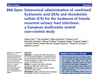
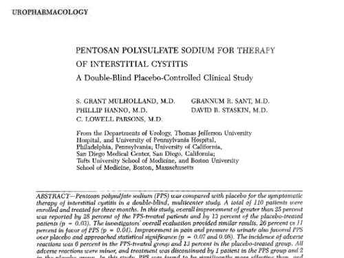

cuaj-5-6-e136
Minimally invasive device for intravesical instillation-Lovasz-2019-International_Journal_of_Urology
Cikk a Neurourology and Urodynamics-ban 2018.
IC-BPS Treatment Checklist
IC-BPS diagnostic algorhytm.
Glycosaminoglycan Therapy for Bladder Diseases
ESSIC 2017 Budapest abstracts
Prevalence of Symptoms of Bladder Pain Syndrome 2011
The urinary microbiota of men and women and its changes in women during bacterial vaginosis and antibiotic treatment. 2017
Interstitial Cystitis-Associated Urinary Metabolites Identified by Mass-Spectrometry Based Metabolomics Analysis. 2016
Interstitial cystitis intravesical therapy tau-06-S2-S171 2017
Novel targeted bladder drug-delivery systems rru-7-169 2015
Intravesical administration of combined hyaluronic acid (HA) and chondroitin sulfate (CS) for the treatment of female recurrent urinary tract infections 2016 bmjopen-2015-009669
Intravesical treatment with highly-concentrated hyaluronic acid and chondroitin sulphate in patients with recurrent urinary tract infections- Results from a multicentre survey.cuaj-9-10-e721
IC_BPS and glycosaminoglycans replacement therapy 2015 tau-04-06-638
Managing chronic bladder diseases with the administration of exogenous glycosaminoglycans- an update on the evidence 2016 Urology
Hyaluronic Acid and Its Composites as a Local Antimicrobial-Antiadhesive Barrier 2017.jbjiv02p0063
Evidence-based criteria for the pain of IC_BPS in women 2008 nihms43157
Intravesical Glycosaminoglycan Replacement with Chondroitin_2015_Article_306
Intravesical administration of combined hyaluronic acid (HA) and chondroitin sulphate (CS) for the treatment of female recurrent urinary tract infections- bmjopen-2015-009669


Loading ...